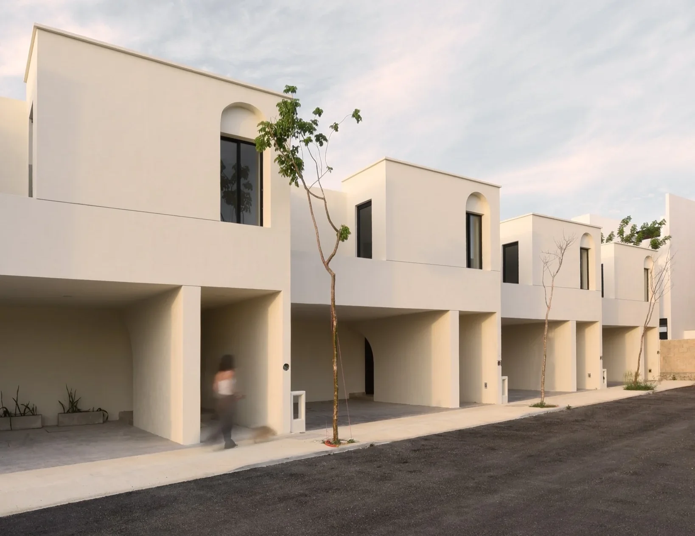

Planeación
Analizamos ubicación, distribución, funcionalidad y necesidades del usuario antes de ejecutar cada proyecto.
En Triton Desarrollos creamos proyectos residenciales y comerciales en Mérida y el sureste de México, con diseño funcional, supervisión de procesos y acompañamiento durante la compra.
Triton Desarrollos es una desarrolladora inmobiliaria con sede en Mérida, Yucatán. Durante 10 años hemos participado en la planeación, construcción y comercialización de proyectos que buscan crear espacios funcionales, duraderos y conectados con las necesidades de sus usuarios.
Nuestra experiencia forma parte de un legado empresarial familiar de más de 60 años. Esa trayectoria nos impulsa a trabajar con responsabilidad, visión de largo plazo y atención cercana en cada etapa.
Para Triton, la calidad no es únicamente una característica final. Es un proceso que comienza en la planeación y continúa durante la construcción, la entrega y la atención posterior.
Analizamos ubicación, distribución, funcionalidad y necesidades del usuario antes de ejecutar cada proyecto.
Definimos especificaciones y soluciones constructivas acordes con el diseño, el uso y las condiciones de Yucatán.
Damos seguimiento a estructura, instalaciones, acabados y avances para detectar y atender detalles oportunamente.
Revisamos la vivienda antes de entregarla y mantenemos canales de atención para reportes posteriores.

A lo largo de una década hemos desarrollado proyectos inmobiliarios con creatividad, colaboración y una visión orientada a mejorar la experiencia de quienes viven, invierten o trabajan en ellos.
Nuestra trayectoria incluye cinco desarrollos entregados al 100% y nuevos proyectos en evolución. Cada etapa nos permite perfeccionar procesos, fortalecer al equipo y construir relaciones de largo plazo.
Una desarrolladora confiable debe ofrecer información clara, experiencia comprobable y acompañamiento. Estos son los principios con los que buscamos construir relaciones duraderas.
Presentamos proyectos, ubicaciones, avances y medios de contacto para facilitar una decisión informada.
Explicamos características, etapas de compra, especificaciones y documentación de cada desarrollo.
Mantenemos comunicación durante la compra, la entrega y el seguimiento posterior de la propiedad.
Reunimos perfiles de desarrollo, construcción, arquitectura, administración y atención comercial para coordinar cada etapa y responder de manera cercana a nuestros clientes.

Respuestas directas sobre nuestra experiencia, calidad, proyectos y proceso de atención.
Recibe información de disponibilidad, características, ubicación y proceso de compra con atención personalizada.